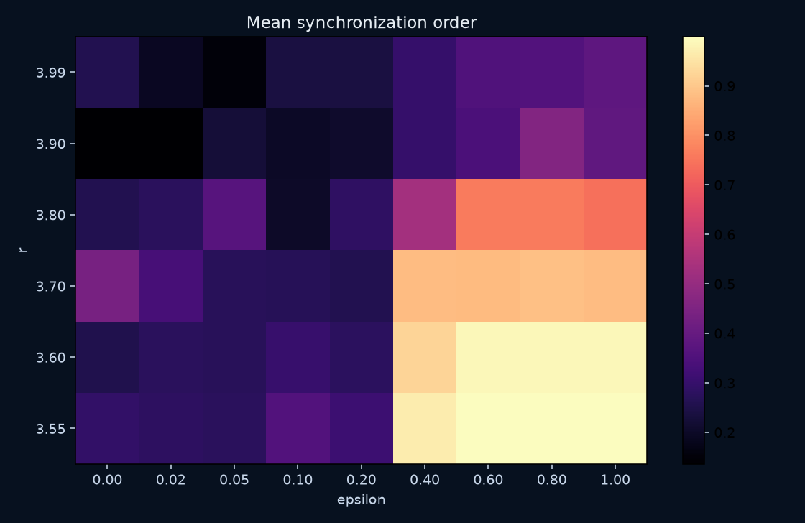
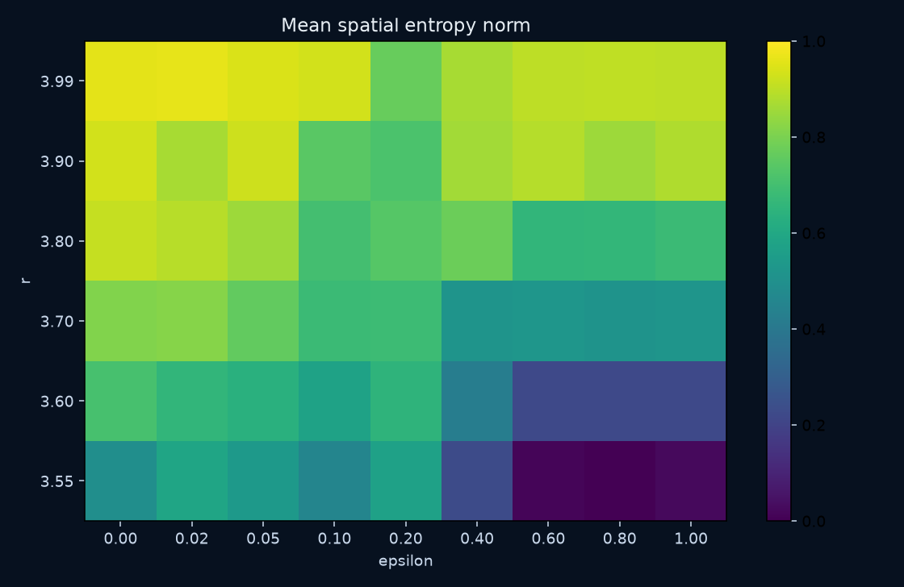
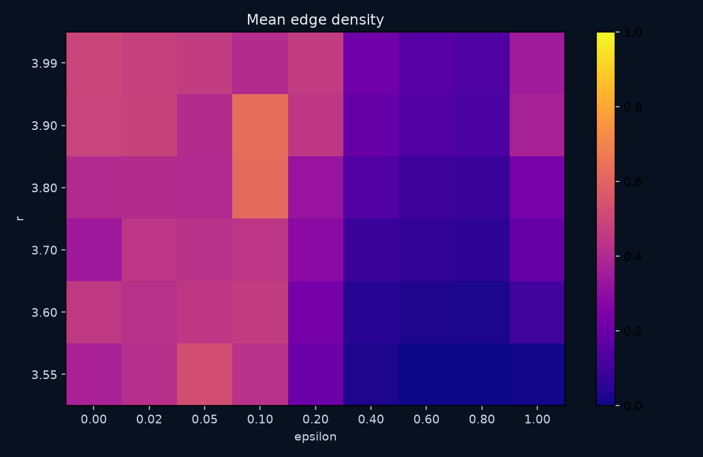
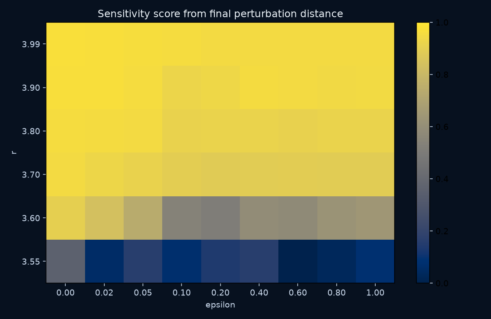
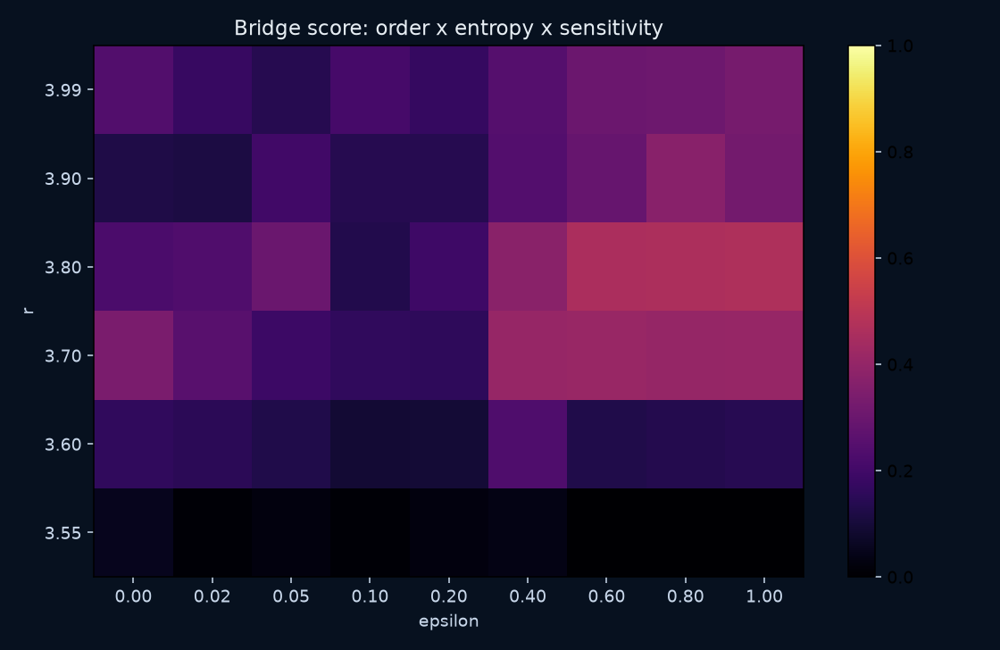
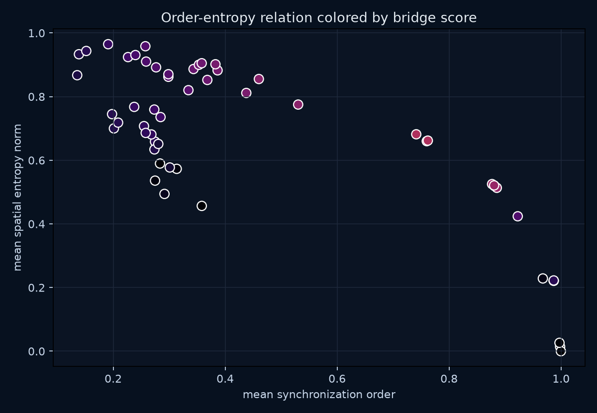

A small atlas of local chaos under spatial coupling.






| r | epsilon | mean order | mean entropy | mean edge density | entropy-rate proxy | log10 final distance | bridge score |
|---|---|---|---|---|---|---|---|
| 3.55 | 0.00 | 0.2915 | 0.4943 | 0.3742 | 0.0001 | -6.8781 | 0.0517 |
| 3.55 | 0.02 | 0.2836 | 0.5898 | 0.4209 | 0.0001 | -10.1091 | 0.0096 |
| 3.55 | 0.05 | 0.2747 | 0.5360 | 0.5262 | 0.0000 | -8.9925 | 0.0238 |
| 3.55 | 0.10 | 0.3582 | 0.4565 | 0.4262 | 0.0000 | -9.9643 | 0.0116 |
| 3.55 | 0.20 | 0.3134 | 0.5731 | 0.2062 | 0.0000 | -9.2198 | 0.0252 |
| 3.55 | 0.40 | 0.9675 | 0.2286 | 0.0264 | 0.0001 | -8.9716 | 0.0361 |
| 3.55 | 0.60 | 0.9983 | 0.0140 | 0.0012 | 0.0001 | -10.7230 | 0.0000 |
| 3.55 | 0.80 | 0.9997 | 0.0000 | 0.0000 | 0.0001 | -10.3629 | 0.0000 |
| 3.55 | 1.00 | 0.9972 | 0.0263 | 0.0110 | 0.0001 | -9.8150 | 0.0022 |
| 3.60 | 0.00 | 0.2549 | 0.7073 | 0.4538 | 0.3460 | -1.0097 | 0.1633 |
| 3.60 | 0.02 | 0.2746 | 0.6585 | 0.4244 | 0.2209 | -1.7223 | 0.1518 |
| 3.60 | 0.05 | 0.2736 | 0.6341 | 0.4477 | 0.3461 | -2.7765 | 0.1286 |
| 3.60 | 0.10 | 0.3011 | 0.5773 | 0.4677 | 0.0000 | -4.9800 | 0.0931 |
| 3.60 | 0.20 | 0.2805 | 0.6513 | 0.2339 | 0.0001 | -5.1945 | 0.0942 |
| 3.60 | 0.40 | 0.9227 | 0.4240 | 0.0443 | 0.0000 | -4.3826 | 0.2313 |
| 3.60 | 0.60 | 0.9868 | 0.2215 | 0.0245 | 0.3313 | -4.5157 | 0.1265 |
| 3.60 | 0.80 | 0.9870 | 0.2210 | 0.0219 | 0.3034 | -4.0544 | 0.1356 |
| 3.60 | 1.00 | 0.9869 | 0.2224 | 0.0999 | 0.1225 | -3.8395 | 0.1409 |
| 3.70 | 0.00 | 0.4377 | 0.8115 | 0.3430 | 0.5972 | -0.5373 | 0.3374 |
| 3.70 | 0.02 | 0.3343 | 0.8203 | 0.4453 | 0.5931 | -0.7206 | 0.2558 |
| 3.70 | 0.05 | 0.2733 | 0.7594 | 0.4290 | 0.5246 | -0.9025 | 0.1901 |
| 3.70 | 0.10 | 0.2682 | 0.6811 | 0.4421 | 0.3330 | -1.1274 | 0.1635 |
| 3.70 | 0.20 | 0.2580 | 0.6860 | 0.2913 | 0.3461 | -1.2382 | 0.1565 |
| 3.70 | 0.40 | 0.8811 | 0.5192 | 0.0827 | 0.4845 | -1.1919 | 0.4066 |
| 3.70 | 0.60 | 0.8767 | 0.5251 | 0.0662 | 0.4403 | -1.1654 | 0.4104 |
| 3.70 | 0.80 | 0.8852 | 0.5134 | 0.0572 | 0.3512 | -1.1787 | 0.4045 |
| 3.70 | 1.00 | 0.8804 | 0.5210 | 0.1905 | 0.4298 | -1.2136 | 0.4068 |
| 3.80 | 0.00 | 0.2587 | 0.9102 | 0.4028 | 0.6930 | -0.4439 | 0.2257 |
| 3.80 | 0.02 | 0.2765 | 0.8920 | 0.4080 | 0.6320 | -0.4846 | 0.2355 |
| 3.80 | 0.05 | 0.3681 | 0.8524 | 0.4004 | 0.5634 | -0.5130 | 0.2988 |
| 3.80 | 0.10 | 0.2012 | 0.7001 | 0.6204 | 0.3144 | -0.8996 | 0.1290 |
| 3.80 | 0.20 | 0.2845 | 0.7358 | 0.3203 | 0.0000 | -0.8616 | 0.1925 |
| 3.80 | 0.40 | 0.5304 | 0.7751 | 0.1427 | 0.5667 | -0.8422 | 0.3788 |
| 3.80 | 0.60 | 0.7601 | 0.6600 | 0.0953 | 0.4159 | -0.9242 | 0.4584 |
| 3.80 | 0.80 | 0.7620 | 0.6618 | 0.0823 | 0.4719 | -0.8413 | 0.4648 |
| 3.80 | 1.00 | 0.7413 | 0.6817 | 0.2389 | 0.5546 | -0.8511 | 0.4652 |
| 3.90 | 0.00 | 0.1387 | 0.9332 | 0.4891 | 0.7393 | -0.3750 | 0.1249 |
| 3.90 | 0.02 | 0.1356 | 0.8673 | 0.4859 | 0.6485 | -0.3679 | 0.1136 |
| 3.90 | 0.05 | 0.2264 | 0.9243 | 0.4101 | 0.6361 | -0.4472 | 0.2005 |
| 3.90 | 0.10 | 0.1979 | 0.7450 | 0.6308 | 0.5341 | -0.7683 | 0.1369 |
| 3.90 | 0.20 | 0.2087 | 0.7182 | 0.4466 | 0.4438 | -0.7112 | 0.1399 |
| 3.90 | 0.40 | 0.2985 | 0.8623 | 0.1934 | 0.5735 | -0.4983 | 0.2454 |
| 3.90 | 0.60 | 0.3434 | 0.8868 | 0.1401 | 0.6397 | -0.5137 | 0.2900 |
| 3.90 | 0.80 | 0.4601 | 0.8554 | 0.1220 | 0.5769 | -0.6024 | 0.3715 |
| 3.90 | 1.00 | 0.3864 | 0.8826 | 0.3683 | 0.6233 | -0.5539 | 0.3234 |
| 3.99 | 0.00 | 0.2574 | 0.9584 | 0.4983 | 0.8708 | -0.3277 | 0.2392 |
| 3.99 | 0.02 | 0.1910 | 0.9648 | 0.4771 | 0.8481 | -0.3657 | 0.1779 |
| 3.99 | 0.05 | 0.1518 | 0.9435 | 0.4641 | 0.8147 | -0.3815 | 0.1381 |
| 3.99 | 0.10 | 0.2396 | 0.9307 | 0.4085 | 0.6788 | -0.4383 | 0.2139 |
| 3.99 | 0.20 | 0.2375 | 0.7678 | 0.4623 | 0.5465 | -0.5445 | 0.1731 |
| 3.99 | 0.40 | 0.2985 | 0.8705 | 0.2166 | 0.5437 | -0.5076 | 0.2475 |
| 3.99 | 0.60 | 0.3529 | 0.9000 | 0.1551 | 0.4939 | -0.5104 | 0.3025 |
| 3.99 | 0.80 | 0.3581 | 0.9050 | 0.1304 | 0.5364 | -0.5306 | 0.3080 |
| 3.99 | 1.00 | 0.3826 | 0.9017 | 0.3501 | 0.4364 | -0.5123 | 0.3285 |